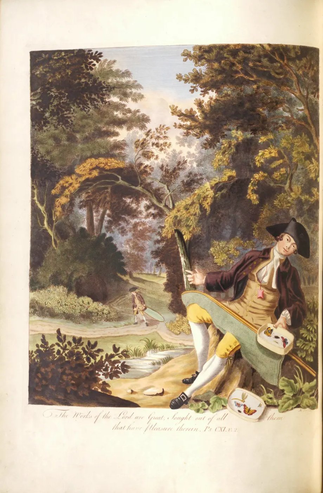

Frontispiece (The Aurelian)
Moses Harris · 1766 · Hand-coloured engraving · University of Alberta Library
Free to use
Moses Harris was thirty-six when The Aurelian appeared in 1766. An uncle in the Society of the Aurelians had encouraged him in entomology as a boy, and since 1762 he had been secretary of a second society of that name. In the same year as this book he published The Natural System of Colours, with a colour wheel built on red, yellow and blue.
Open in The ArtchiveFull-size file ↗
More like this